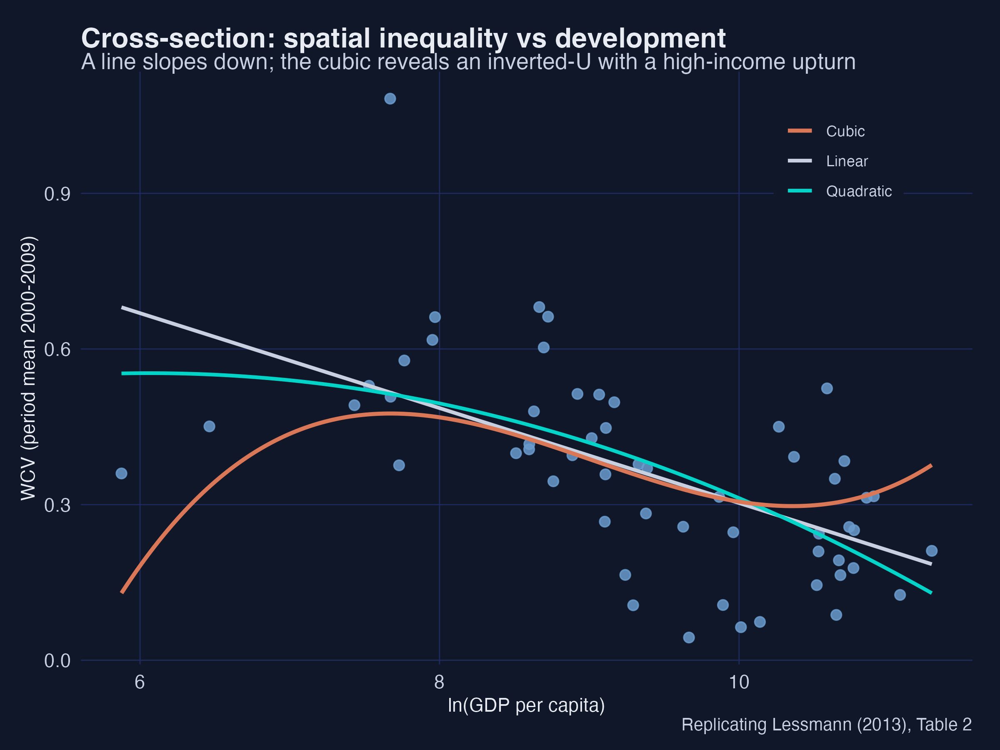
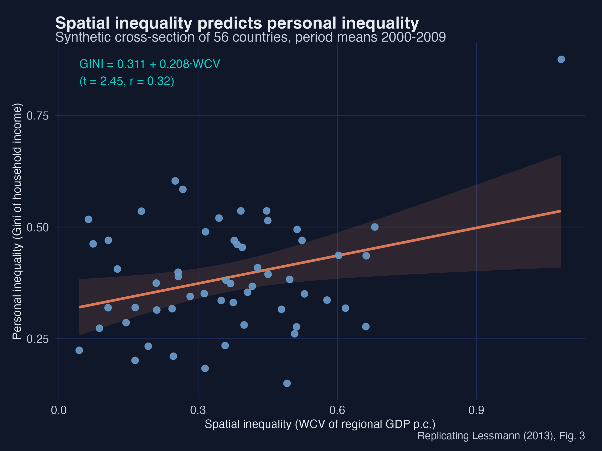
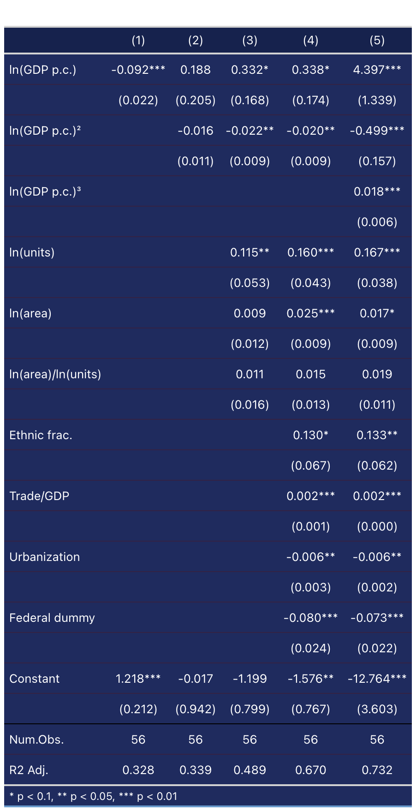
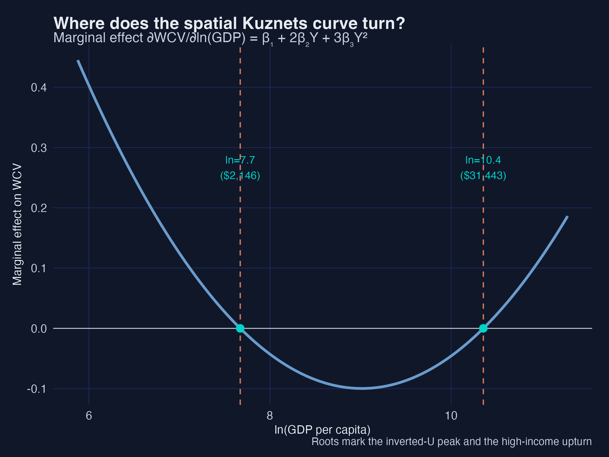
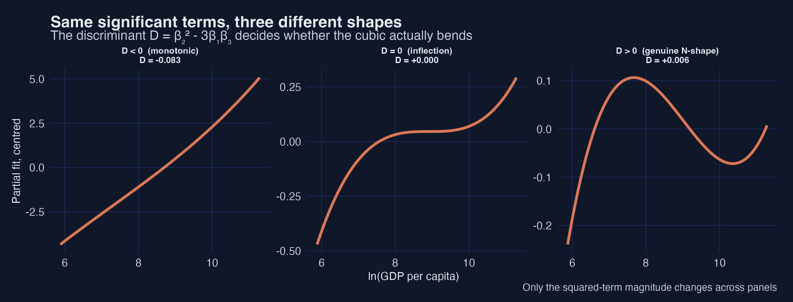
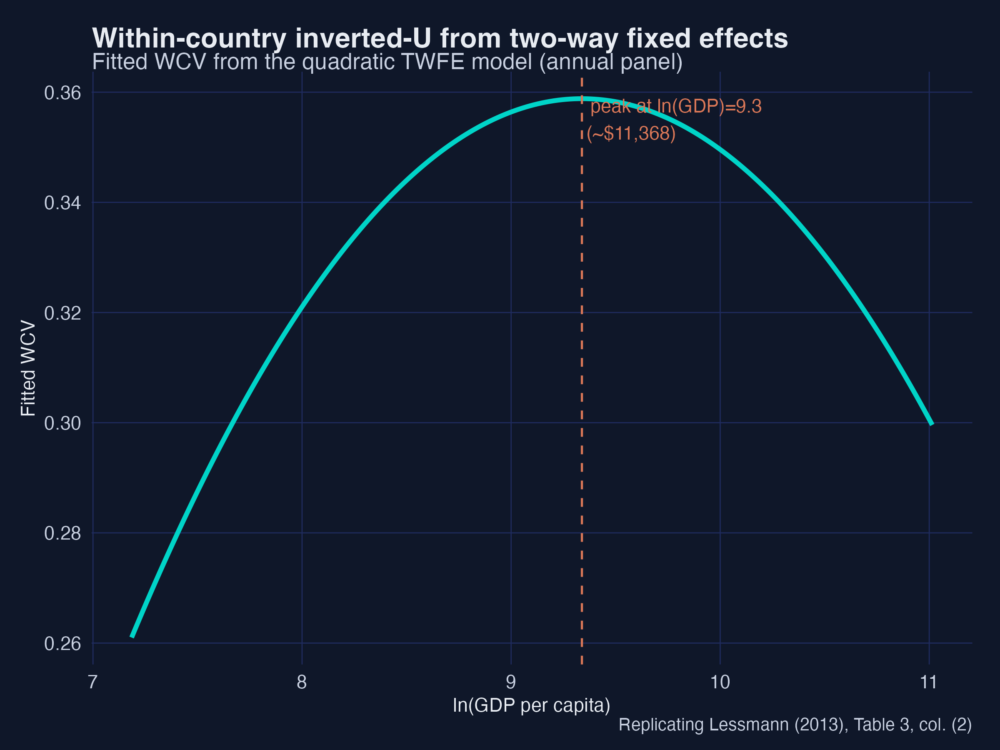
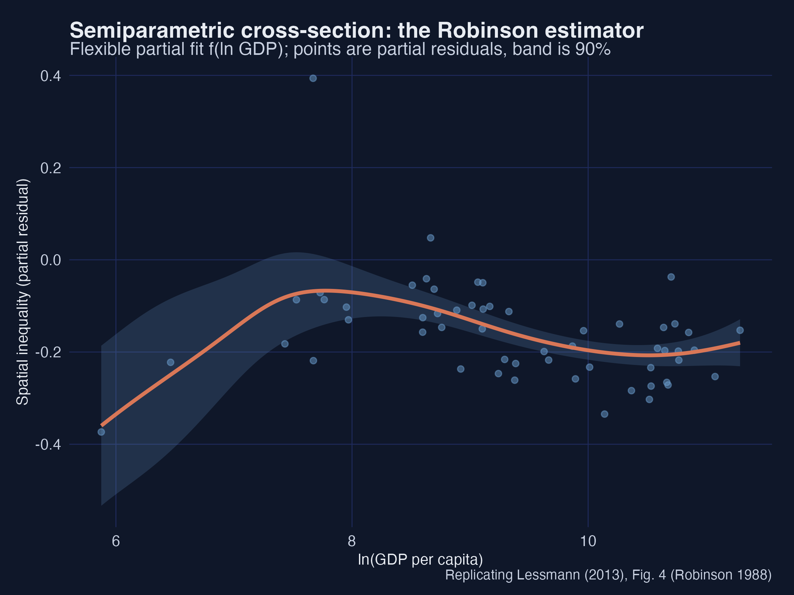
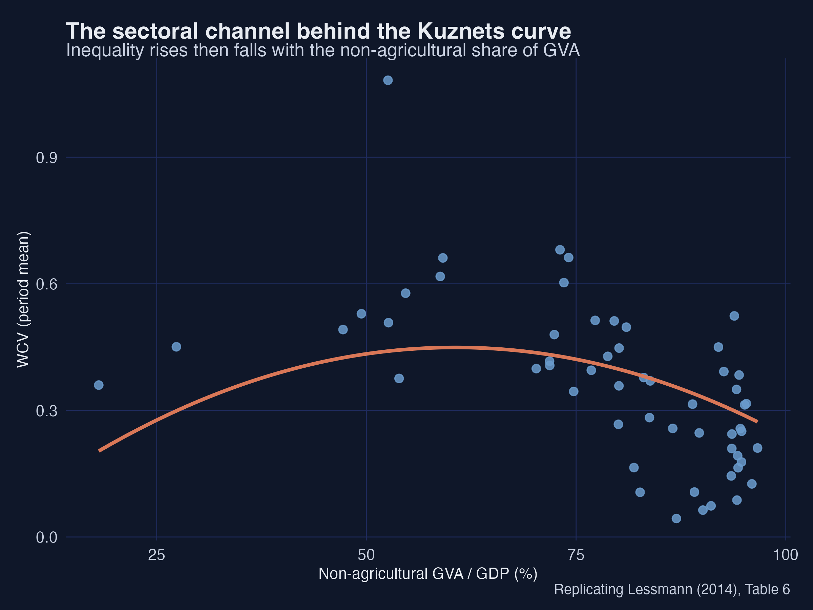
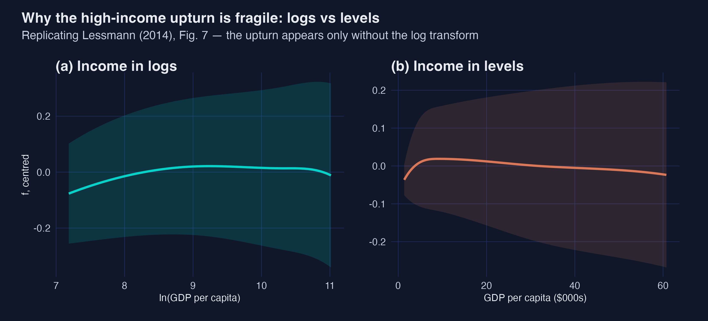

Is there an inverted-U? A synthetic replication in R
Nagoya University (GSID)
July 8, 2026
Act I
Kuznets (1955) and Williamson (1965) had an answer: as countries develop, spatial inequality first rises, then falls — an inverted-U.
But the data to test it — regional accounts for poor and rich countries — barely exist. Lessmann (2014) assembled them. We rebuild the exercise on synthetic data so the whole pipeline is open.

Cross-section: a line declines, a quadratic bends, a cubic adds a high-income upturn.
fixest — a clean inverted-UAct II
\[\mathrm{WCV} = \frac{1}{\bar{y}}\left[\sum_{j} p_j\,(\bar{y}-y_j)^2\right]^{1/2}\]
Population-weighted spread of regional GDP per capita. A populous poor region counts; a tiny rich enclave barely moves it.
We simulate regions for 56 countries, 1980–2009, and compute the WCV from them — 890 annual observations.

GINI = 0.31 + 0.21·WCV (t = 2.5, r = 0.32).

Five specifications: bivariate → quadratic → +controls (inverted-U) → +cubic (N-shape).

∂WCV/∂ln(GDP) = β₁ + 2β₂Y + 3β₃Y² = 0 → peak ≈ $2,100, trough ≈ $31,000.
All three cubic terms can be significant and the curve still not bend in range. The test is the discriminant \(D=\beta_2^2-3\beta_1\beta_3\):

Same significant terms, three shapes — only the discriminant tells them apart.
feols(wcv ~ lnGDP + I(lnGDP^2) | country + year, vcov = "hetero")

Fitted WCV from the two-way FE quadratic, peaking near $18,000.

Robinson (1988) partial fit with a 90% band: inverted-U with a high-income upturn.
Act III

Replace income with the non-agricultural share of output — the inverted-U returns.

It appears in income levels, vanishes in logs (and within countries).
Full tutorial, code, data and web app: carlos-mendez.org/post/r_kuznets